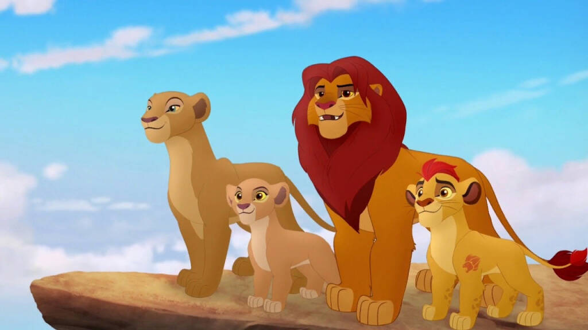
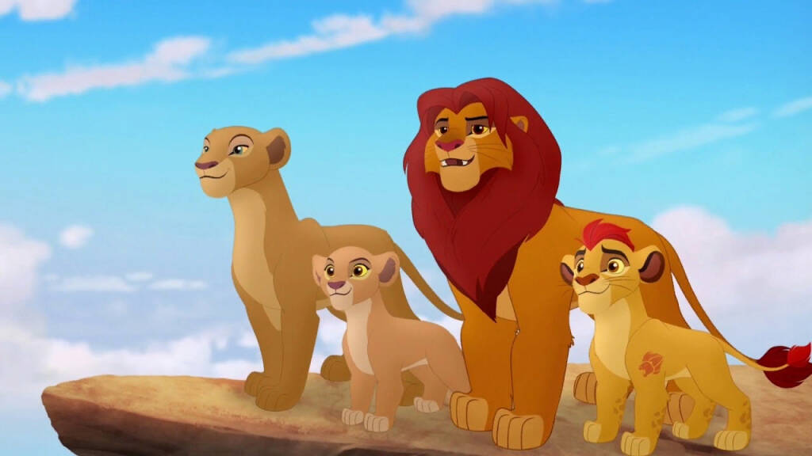

Симба — сын Короля-льва Муфасы и королевы Сараби, племянник Шрама.
В детстве был неугомонным и любопытным львёнком, из-за чего часто попадал в неприятности.
После внезапной смерти отца (в которой винит себя) львёнок был вынужден покинуть родное королевство.
За пределами родины львёнка приютили и воспитали сурикат Тимон и бородавочник Пумба, и бок о бок с
ними беглый юный принц живёт беззаботную и лёгкую жизнь.
Став взрослым, Симба встречается с духом погибшего отца, .убедившего его в истинном предназначении.
Прозревшему и разобравшемуся в себе принцу предстояло вернуться и спасти Земли Прайда от окончательного упадка
 
